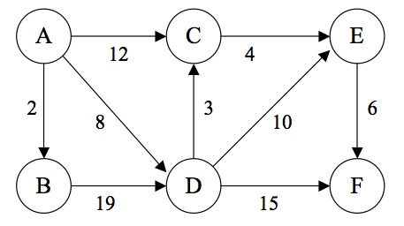
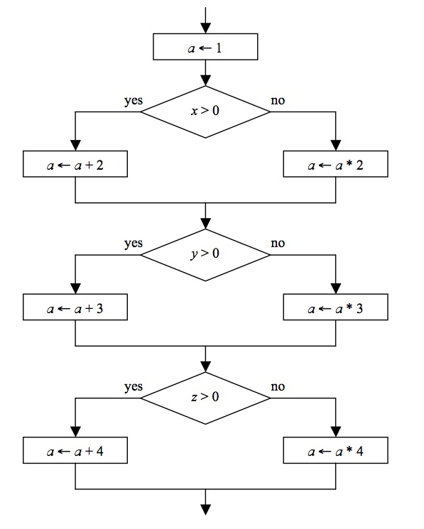

15-105 SPRING 2009 [CORTINA]
HOMEWORK 6 - due Wednesday, March 18
WRITTEN PROBLEMS (8 pts)
Hand these problems in on paper in class on the due date specified.
- (1.5 pts)
A DNA sequence consists of only the letters A, C, T and G. Suppose we
examine many sequences and find the relatively frequencies (in
percentages) for each letter:
LETTER FREQUENCY
T 63
A 20
G 10
C 7
-
Derive a Huffman tree for this 4-letter alphabet, and assign a binary
Huffman code for each letter based on your tree.
-
Using your Huffman codes from part (a), how many bits would be
required to encode the DNA sequence ATTGCTATTTAGTT? Show your work.
-
Assign a binary code for each letter using the smallest fixed-width
code possible. How many bits would be required to encode the DNA sequence
in part (b) now? Show your work.
-
(2 pts) Consider the graph shown below:

-
Trace the shortest path algorithm given in class, showing the values in
the SP and Pr tables as illustrated in lecture. What is the length of the
shortest path from node A to node F?
-
If we used a greedy algorithm to find the shortest path from node A to
node F, starting with node A, what path would we pick? What is its total
length? Does the greedy algorithm find the shortest path as you found in
part (a)? Why or why not?
-
(1 pt)
Some software bugs are related to representations of time in a computer.
In the late 1990s, software developers had to contend with the Y2K
bug. A time-related software bug occurred in 2007 and was a big
news story. Describe what this bug was and how it affected computer
operations. (HINT: It is related to an annual event that happens on
Sunday, March 8 of this year.)
-
(2 pts)
When software is tested for correctness, one technique is to come up with
a set of data values that cause every path in a program to be executed at
least once. For the flowchart
below, there are 8 unique paths through the flowchart. For each unique
path, give values
for x, y and z that will cause that unique path through the flowchart to
be executed. For each unique path, also give the final value of a.

-
(1.5 pts)
We claim that the following algorithm computes MN, where M and
N are positive integers.
1. Set answer equal to M.
2. Set i equal to 1.
3. While i ≠ N do the following:
(a) Multiply answer by M.
(b) Add 1 to i.
4. Output answer.
The invariant for this loop is answer = Mi. You
will use this invariant to show logically that this algorithm is correct.
- Show that the invariant is true immediately before the loop begins.
-
Assume that the invariant is true at the start of each iteration of the
loop. We want to show that the invariant is also true at the end of each
iteration of the loop.
- After step 3a, what is answer equal to?
- After step 3b, what is answer equal to?
- Show that after the loop terminates, the output answer must be
MN.
- Give a brief argument that explains why the loop must terminate.
COMPUTER PROBLEM (2 pts)
Hand this in electronically using the
Electronic Handin System by 11:59PM on the due
date indicated.
The number of ways to choose r items from n unique items, 1 ≤ r ≤ n,
is given by the recursive formula:
C(n,r) = C(n-1, r-1) + C(n-1, r), when 1 < r < n.
C(n,r) = n , when r = 1.
C(n,r) = 1 , when r = n.
For example, the number of ways to choose 2 letters from the 4 letters
ABCD is 6: AB, AC, AD, BC, BD, CD. The formula gives us this numerical
answer recursively:
C(4,2) = C(3,1) + C(3,2)
= 3 + C(3,2)
= 3 + C(2,1) + C(2,2)
= 3 + 2 + C(2,2)
= 3 + 2 + 1
= 6
Write a Python program that has a main function that asks the user for the
number of items (n) and the number of items chosen (r) and then outputs
the number of ways of choosing r items out of n items. The main function
should call a recursive function that computes and returns the answer.
The recursive function should have two parameters: the values for n and r.